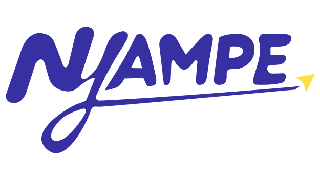
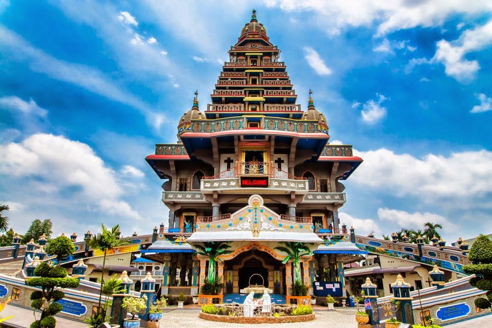

Pilih yang
sesuai budget
Bandingkan estimasi biaya perjalanan.

JELAJAH KOTA, CARA KAMU.
Bandingkan estimasi biaya perjalanan.
Lihat estimasi waktu dan jumlah tahap.
Titik, naik, turun, dan transit yang mudah diikuti.

Biaya, durasi, dan tahapan di bawah ini adalah contoh simulasi, bukan data transportasi real-time.